- Ban đầu Lein báo mình là lấy 15% cho các quầy không hot, 20% cho các quầy hot. Khi mình hỏi lại thế nào là quầy hot, thế nào là không hot, Lein không trả lời.
- Cuối cùng, dù có rất nhiều quầy bên mình flop cùng cực, Lein vẫn tính công 20% đều.
- Tương tự, khi hỏi về phí của quầy pick free, Lein cũng chỉ bảo pick xong mới tính
- Hãy lưu ý part 1 vì nó có liên quan part 8.
Ảnh bên dưới là báo giá:
- Lần đầu báo giá 15-20% cho hot, 5-10% cho thường + Pick không được thì sẽ báo ngay tại fes
- Lần 2 báo giá không rf công
- Lần 3 (ảnh 3-4) báo giá 20% hot, 15% thường
- Cuối cùng hỏi vụ thế nào hot thế nào thường sau đó Lein onl cũng không trả lời
^ Ảnh 1. Lần đầu báo giá 15-20% cho hot, 5-10% cho thường + Pick không được thì sẽ báo ngay tại fes
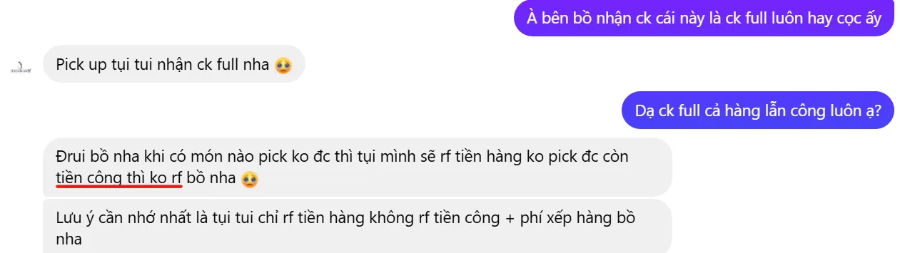^ Ảnh 2. Có chủ đích, báo không rf công từ đầu
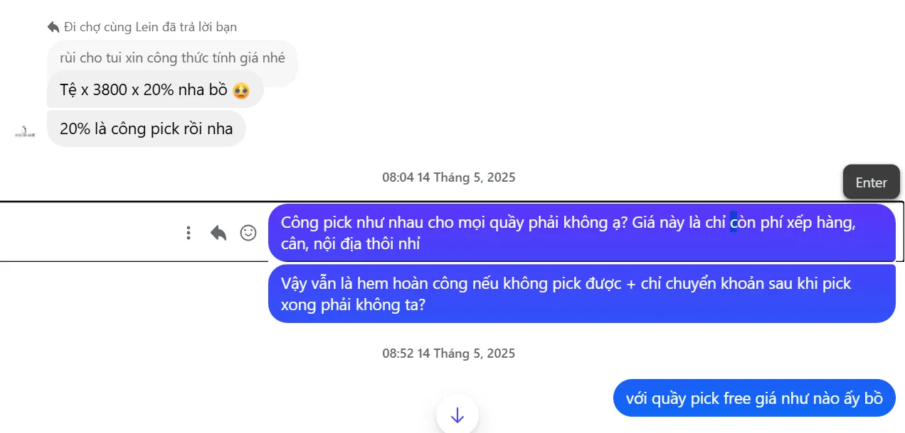^ Ảnh 3. Update công pick 20%, mình hỏi cụ thể hơn về phí
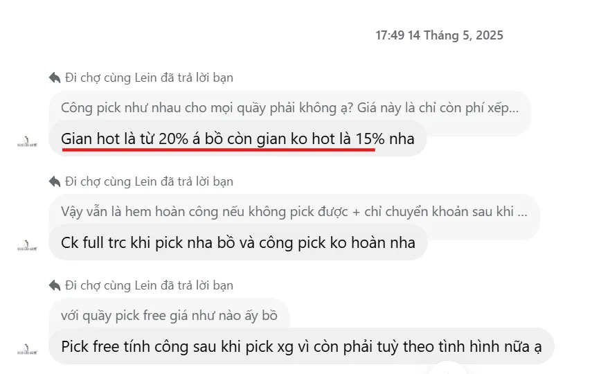 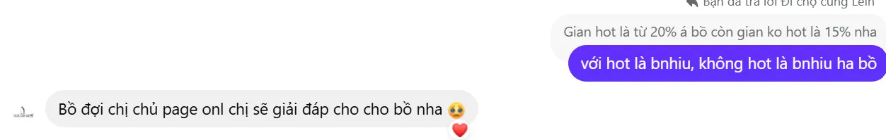^ Ảnh 4+5. Báo không hot giá 15%, sau đó không rep thêm câu hỏi về độ hot, cũng không làm rõ thêm về phí
- Người số khổ không rành nên ban đầu không nhận ra gì lạ. Nhưng rồi ô hay, trong công thức rf của Lein có khoản trừ 200k kỳ bí. Sau khi thắc mắc hỏi rõ, mình đã được Lein đáp là VAT.
- Bạn đã nghe thấy shop nào tính thuế trên hàng xách tay như goods chưa? Giờ có rồi đó. Cụ thể 200k = Tiền hàng*10% + Cân 95k (45*~2.1kg) + Phí ship nđ Việt 30k (100k/3 người pick)
- Lúc bị đặt câu hỏi về VAT, Lein gửi cho mình ảnh về việc đóng thuế theo nhà nước của một bên đơn vị vận chuyển, thứ mà ngay từ ban đầu Lein không hề thông báo.
- Đúng là nhà nước bắt đóng thuế, nhưng là đóng thuế theo kiện hàng chung, đằng này lại mập mờ như thể nhà nước đánh thuế theo giá sản phẩm của đám hàng không billl.
- Đến lúc chúng mình đòi xuất hóa đơn, Lein liền bảo sẽ đi làm việc với kho và bỏ VAT đi.
- Cho hỏi từ lúc nào thuế lại linh động như vậy? Kho bạc nhà nước mà thích thì nộp, không thì thôi hả mọi người?
Ảnh 1: Hàng về, lòi ra khoảng 200k đáng nghi mà Lein báo là thuế.
Ảnh 2-5: Lein giải thích khoảng 200k = Tiền hàng*10% + Cân 95k (45*~2.1kg) + Phí ship nđ Việt 30k (100k/3 người pick)
^ Ảnh 1. 200k đáng nghi được giải thích là cân và ship nội địa, rồi sau đó còn cả thuế?!
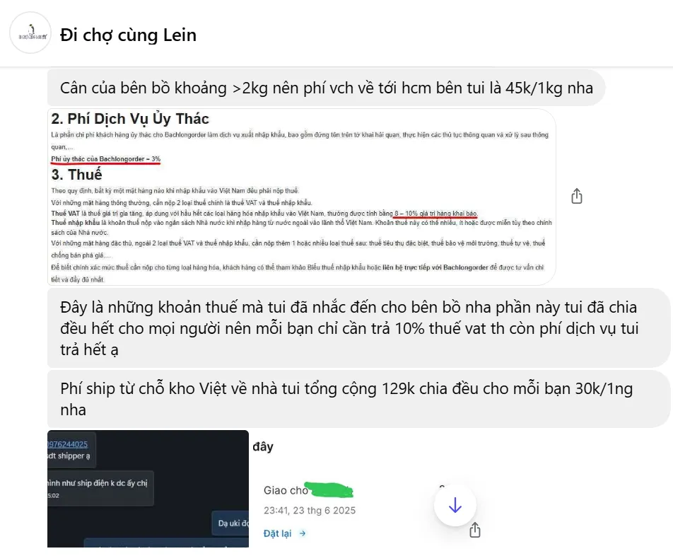^ Ảnh 2. Báo cân mình > 2kg. Chụp 1 cái ảnh mơ hồ về thuế.
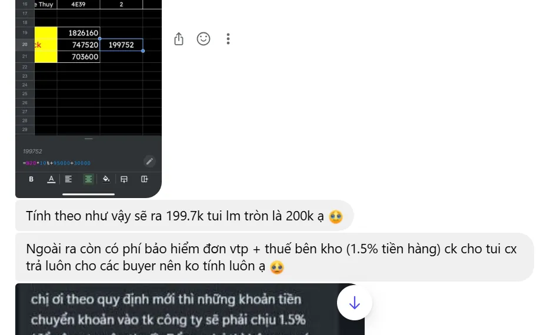^ Ảnh 3. Công thức tính 200k = Tiền hàng đã pick * 10% + Cân 95k (45*~2.1kg) + Phí ship nđ Việt 30k (100k/3 người pick)
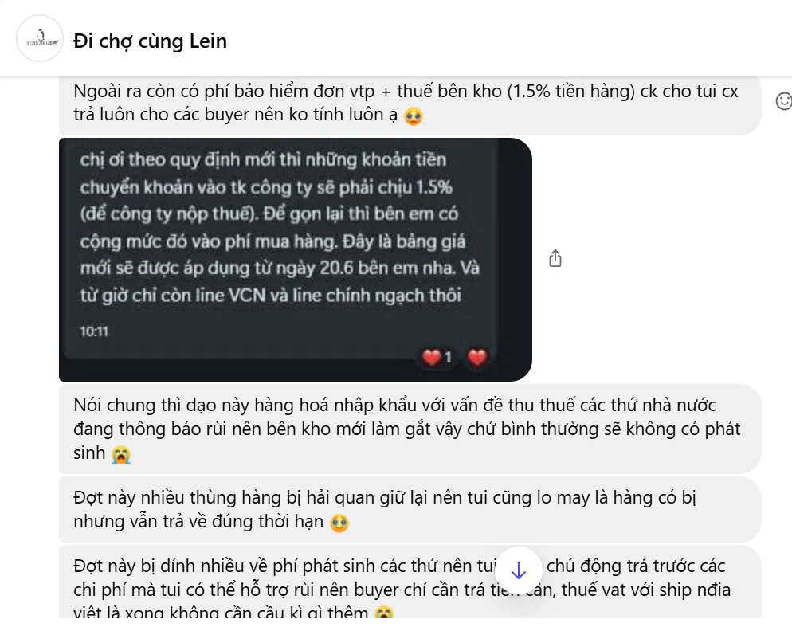 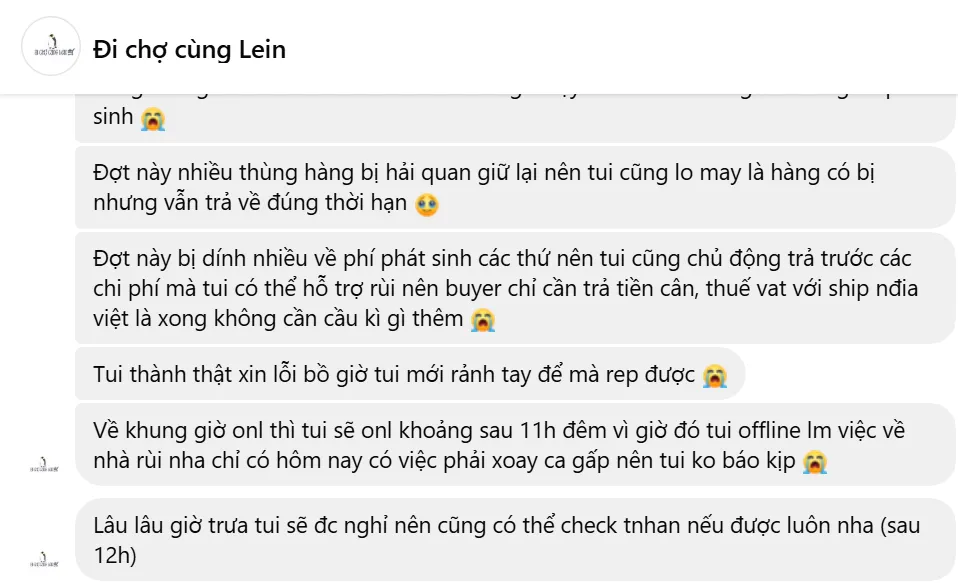^ Ảnh 4+5. Viện ti tỉ thứ lý do như phí dịch vụ bảo hiểm v.v
- Về phí cân, như ảnh cap, bên Lein có công khai trên carrd của mình là 30k/kg Trung. Tuy nhiên khi mình lấy ảnh ra đối chất, bạn bảo là mới cập nhật gần đây.
- Xin hỏi, vì sao khách không được thông báo về điều này? Ngoài ra, shop cũng chỉ mới thành lập được chưa tới nửa năm, việc cập nhật này là hoàn toàn vô lý. 30k/kg vốn cũng đã là một cái giá tương đối cao đối với cân Trung.
- Chưa hết, khi hàng nhận về, bên mình đã cân lại và thực tế cục hàng chỉ có 1kg tròn. Thế mà bên đó dám bảo hàng mình 2kg hơn.
- Sau đó, Lein cũng đã nhận có sơ suất trong việc tính cân này. Thử hỏi, nếu mình không cân lại thì thế nào?
Ảnh: Tụi mình bắt đầu đối chất từng vấn đề. Về giá cân và ảnh cân lại của tụi mình.
- Suốt quá trình pick không hề cập nhật cho khách. Hầu hết đều là hàng về VN khách mới biết được bên Lein đã pick món gì.
- Chỉ báo chung chung pick quầy nào hụt quầy nào không => Hi vọng rồi thất vọng tột độ.
- Sau đó là cả quá trình anh gọi em không nhấc máy lúc 12h đêm cùng Lein. Bất kể bên mình nhắn thế nào, Lein bảo mấy giờ sẽ rep thì Lein đều rep lúc 12h đêm - 3h sáng, không thể nào liên hệ được vào ban ngày, mặc dù page có 3 ad.
- Theo Lein bảo thì Lein là chủ, thường đi làm đến tối, còn ad khác là 2k7 đang thi đại học. Oke, thi đại học có thể bỏ qua, nhưng ai mà không đi làm đến tối?
- Thực sự số tui khổ đã thức liên tiếp 3 đêm chỉ để chờ bên đó rep 3 mặt 1 lời sau khi bị bắt “yêu nước không tình nguyện”. Tuy nhiên plot twist 1 xảy đến, Lein báo nhập viện.
Ảnh 1-5 là chập chờn trong quá trình pick & Sau khi pick:
- Nguyên ngày không một tin update tình hình. Báo pick đủ khu 2 nhưng ngày hôm sau (khi đã tàn fes) mới update lại là pick hụt.
- Thật sự thì cái folder pick hụt bên đó cập nhật thay đổi theo từng ngày luôn ấy. Tức bên đó cũng không hề chắc chắn về những món đã pick được => Lẽ ra khúc này mình phải nghi rồi.
- Trong ảnh 4, báo đã pick được set postcard khu 4. Nhưng về lại báo là pick hụt? (Ảnh sau đó)
Ảnh sau đó là sau khi hàng về, cần tổng kết:
- Bên này 3 ad trực nhưng tuyệt nhiên không một ai rep.
- Có thể thấy rõ sự tuyệt vọng của người số khổ khi phải hò từ sáng tới đêm, bển bảo đi làm về muộn thì người số khổ cũng ráng thức tới sáng. Nhưng bên này vẫn rất nhây và thất hẹn hết lần này đến lần khác.
- Những tưởng bên đó lấy công cao nhưng sẽ làm ăn đàng hoàng? Không, ship thiếu hàng. Lein đã ship thiếu đúng 3 món quan trọng nhất trong cuộc pick up của bọn mình.
- Note: Vì đây là những món bọn mình đã nhắn artist trước để có hàng, nên đó không chỉ là một món hàng, nó còn là một món quà tinh thần vô cùng to lớn với bọn mình.
- Ngoài ra, cách gói của Lein cũng có phần sơ sài, cụ thể là 1 hộp + 1 lớp chống sốc mỏng dính. Có món của mình còn bị df 1 góc.
- Quay trở lại với vấn đề rep tin, sau khi mình liên tục nhắn tin bên đó không trả lời. Vào 12h đêm, 1 cái nick clone đến mức không có nổi cái hình đại diện đã ib cho mình, bảo là cộng tác viên của chủ shop và chủ shop đã nhập viện.
- Bạn này bảo đang chạy lên bệnh viện và sẽ hỏi chủ shop. Ờm, câu này được thốt ra lúc 12h đêm khiến mình vẫn còn đặt dấu chấm hỏi là bệnh viện nào mở cửa cho vào thăm giờ đó?
- Nhưng quao hơn là bạn cộng tác viên này còn là thí sinh 2k7, sáng cùng ngày cần phải đi thi. Thật sự mình không hề muốn chat với cộng tác viên nhỏ tuổi chút nào, Lein đã nghĩ gì mà đẩy bạn này ra tiếp chuyện với mình?! Trong khi sáng nhỏ còn đi thi?!
- Và như mọi khi, bạn cộng tác viên này lại lên cho mình 1 wall of text giải thích nhưng không giải quyết, rồi off (ok, ngủ đi sáng thi). Để lại tụi mình chưa kịp wall of text lại. Sáng hôm sau, Lein và cả bạn ctv đều cùng nhau dắt tay off hết cả 1 buổi sáng.
- Trưa bạn ngoi, nhưng rồi sao? Khi mình hỏi địa chỉ bệnh viện ở đâu để mình tới 3 mặt 1 lời thì bạn off (mình và bạn ở cùng thành phố). Facebook cá nhân của chủ thì bay. Page thì không cập nhật cả tháng rồi. Gọi số thì thuê bao. Tới đây gọi công an cũng được rồi đó.
Ảnh: Bạn ctv 2k7 inb báo chủ shop nhập viện & giải thích (không phải giải quyết) vấn đề.
Ảnh cập nhật mới nhất:Không có 2k7 nào nói chuyện với tụi mình cả. Tất cả là do chủ shop tự biên tự diễn.
- Chỉ có người số khổ là bị tính công khác với mọi người!!! Cụ thể: Các khách khác không bị tính phí pick hụt + không bị tính VAT
- Sáng ra vẫn chưa nhận được câu trả lời, vào check sheet thì tụi mình nhận thấy sheet đã được sửa công nửa vời. Cụ thể là bỏ 10% VAT đi, giảm xíu tiền cân xuống. Nhưng các sheet khác của các bạn cùng pick bên này thì vẫn có 10% VAT đó.
- Lo sợ shop làm ăn gian dối, chỉ bên mình làm tới nên chỉ xóa tiền cho bên mình, nên mình đã thử nhắn tin với một bạn khách khác và quao, sự thật bất ngờ.
- Bạn khách này đã được refund đầy đủ tiền từ tận 1 tháng trước (fes ngày 17,18/5, ngày 30/5 bạn nhận được tiền, còn mình thì vẫn chưa).
- Chưa kể, sau khi check lại sheet mình từng duplicate lên trước khi Lein sửa sheet + đối chiếu với lời kể của bạn khách này, chỉ có mỗi tụi mình bị phí công cho các quầy pick hụt (tức vẫn cắn 20% giá trị món hàng) + VAT
- Lúc này mình thật sự rất chấm hỏi, không hiểu sao @Số tui khổ quá mà lại có thể khổ đến như thế? Hỏi ra thì shop cũng nhận là mình làm ăn gian dối nhé. Đến giờ mình vẫn chưa hiểu vì sao chỉ có một mình mình bị tính phí như thế, và Lein sửa sheet tính thêm 10% VAT cho các bạn kia là ý gì.
- => Tuy nhiên đề nghị các khách khác check lại về công 25% của bản thân. Cụ thể xem mục 8.
Ảnh 1: Tới ngày 14/6 mình hỏi bảng tổng kết giá, bên này vẫn chưa có. Trong khi bạn khác cũng pick bên này đã được rf đủ từ 30/5???
Ảnh 2-8: Công thức tính giá của bên mình và các bên khác không hề giống nhau. Đây là chụp từ sheet đã duplicate lên trước khi Lein chỉnh sửa. Có thể double check với hóa đơn rf của bạn kia.
Ảnh 9-10: Là công thức tính giá của 2 bên sau khi bên mình chất vấn khoảng thuế 10%. Lein thêm thuế 10% vô cho 2 bạn pick up khác luôn trong khi trước đó không có?? Còn hiện giờ vào sheet check lại thì Lein đã bỏ ra rồi. Các bạn khác đều không bị ảnh hưởng gì. Hãy xem tên file để tránh nhầm lẫn nha. Thật sự là chụp hơi rối 🥹
^ Ảnh 1. 14/6 tức đã 1 tháng trôi qua nhưng hàng chưa thấy, giá cũng chưa
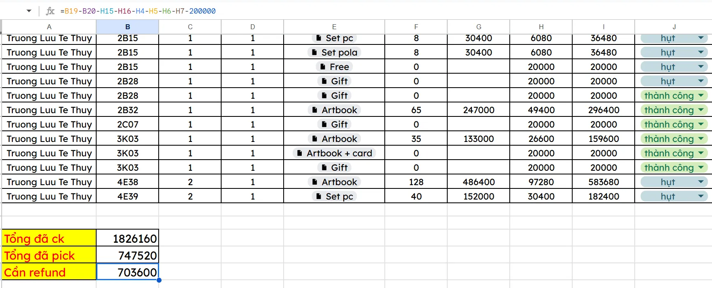^ Ảnh 2. Sheet này là của bên mình, có thể thấy bị trừ công dù pick hụt + đống phí vô lý 200k
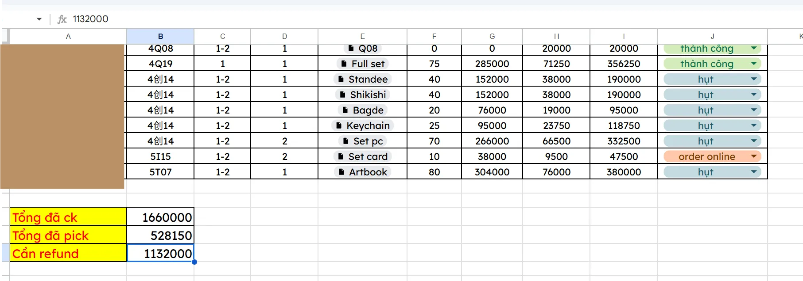^ Ảnh 3. Sheet này là của 1 bạn khách khác, lấy tiền đã ck - tiền pick = đúng số được rf
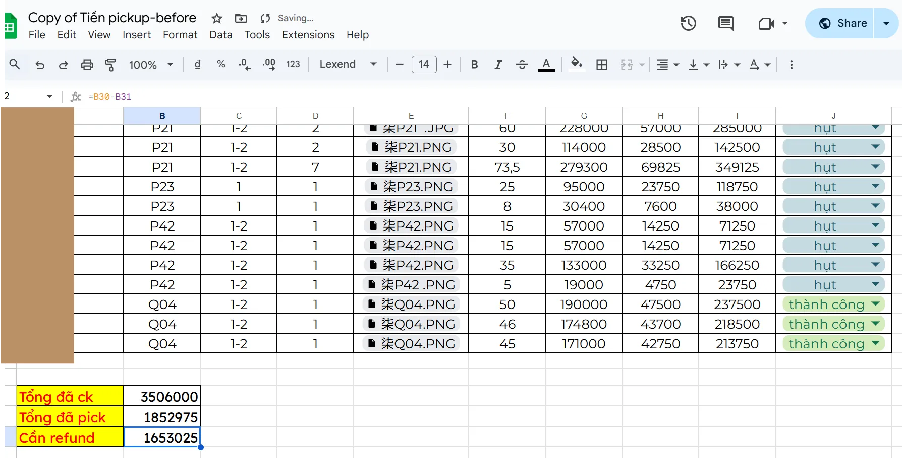^ Ảnh 4. Sheet này là của bạn khách bên dưới mà mình đã liên hệ thử, lấy tiền đã ck - tiền pick = đúng số được rf
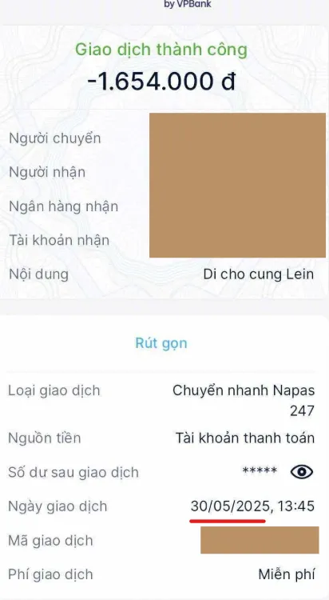Ảnh 5. Và bạn đã được rf đúng số tiền theo công thức trên từ 30/5
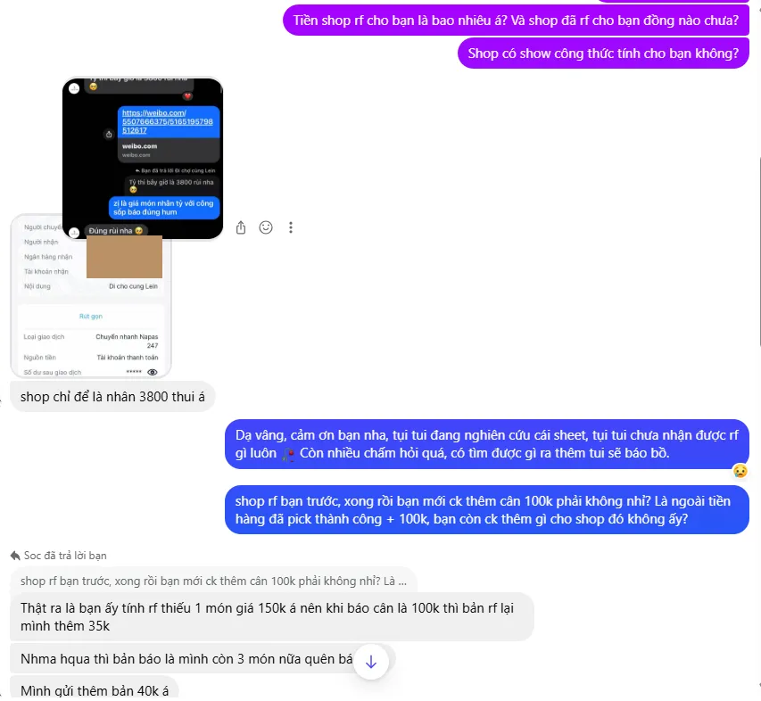 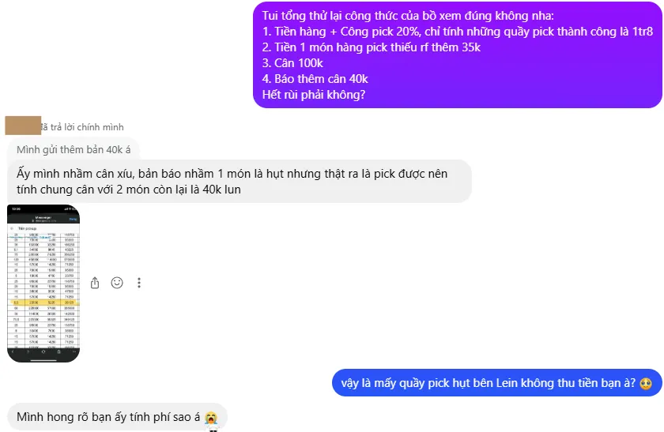Ảnh 6+7. Thông tin thêm
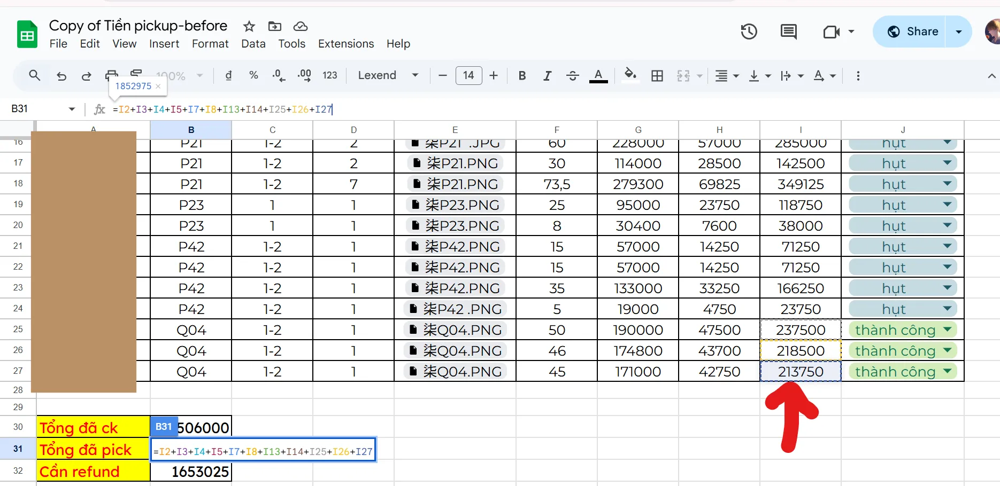^ Ảnh 8. Xem lại công thức tính của 1 bạn khách khác chi tiết hơn, số tiền đã pick không cộng công pick hụt, nên có thể thấy chỉ có mình bị tính pick hụt
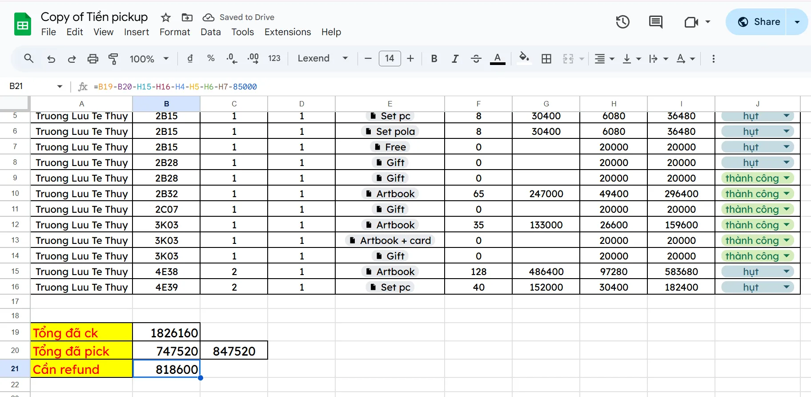^ Ảnh 9. Lein sửa giá cho mình lần 1. Vẫn trừ phí pick hụt, chỉ giảm tiền cân, bỏ tiền thuế, còn lại phí phụ 85k
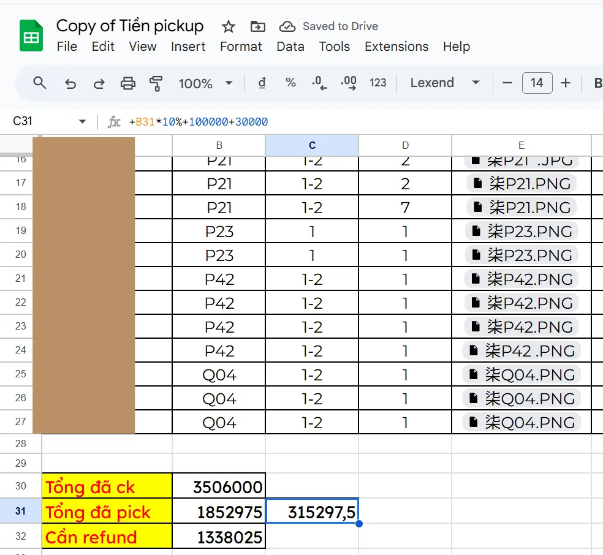^ Ảnh 10. Đồng thời Lein thêm lại VAT cho các bạn khác rồi giảm số tiền rf của mấy bạn đi?!
- Tới khúc này thì cuối cùng Lein cũng thành thật với mình, rằng bạn ấy đã lừa dối mình ngay từ đầu, rằng chẳng có tự đi pick up gì hết mà bạn cũng chỉ qua một người bạn khác.
- Điều này có nghĩa là gì? Như ảnh, nghĩa là bạn cắn thêm 1 phần công trung gian nên mới có mức 20% cao vô lý. Và khách không hỏi đến cùng thì hoàn toàn không moi ra được chuyện này.
- Đặc biệt là về chuyện VAT, bạn khai rằng kho tính thuế theo kiện và chỉ mỗi tụi mình bị bắt tính 10% cho khoản này (vì khách khác đã xác nhận không có VAT), vậy nếu tụi mình không làm ầm lên thì không chỉ bị mất tiền nhưng không có hàng, còn phải đóng thuế nữa hả???
Ảnh: Thú nhận của bên đó về tất cả mọi chuyện từ trước tới nay, và cuối cùng cũng tính lại đúng tiền. Hiện bọn mình đã nhận đủ rf.